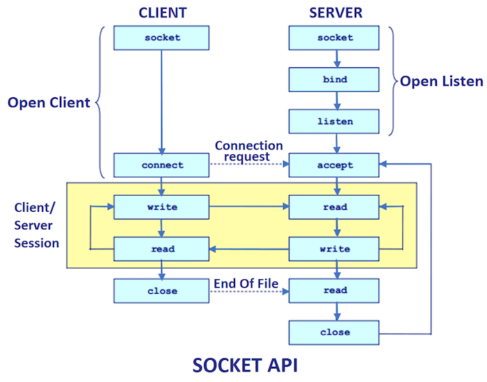

Membuat program socket client
Tujuan
- Mampu memahami protokol komunikasi socket client TCP/IP
- Mampu membuat program komunikasi antara MCU sebagai client socket dan komputer sebagai server socket dengan C#
- Mampu membuat program untuk mengirim data sensor dari MCU ke komputer secara real-time dengan protokol komunikasi socket TCP/IP
Capaian
- Menjelaskan konsep komunikasi TCP/IP
- Menjelaskan konsep protokol Socket TCP/IP agar MCU dapat berkomunikasi dengan perangkat lainnya
- Membuat program socket client di sisi MCU yang bertugas mengirim data sensor ke Socket Server C# Desktop GUI secara real-time
Teori Singkat
Program socket biasanya digunakan untuk komunikasi antara berbagai proses yang berjalan pada sistem yang berbeda, program tersebut kebanyakan dibuat untuk lingkungan program client dan server.
Ada 2 jenis protokol yang dapat digunakan untuk melakukan komunikasi menggunakan socket:
TCP/IP Socket
Konsep yang digunakan pada protokol ini adalah connection oriented dan reliable data transfer, ketika program yang kita buat menggunakan protokol ini tidak mementingkan kecepatan tetapi lebih mementingkan ketepatan data yang dikirimkan.
Connection oriented sendiri adalah sebuah konsep dimana socket yang terhubung harus memiliki tanggung jawab untuk memberikan notifikasi ketika sedang melakukan pengiriman data, atau sering disebut juga dengan istilah synchronous.
UDP Socket
Berbeda dengan komunikasi protokol TCP/IP, UDP Socket menggunakan konsep connectionless oriented dan unreliable data transfer. Akan cocok sekali ketika kita akan membangun sebuah aplikasi yang lebih mementingkan dengan kecepatan data dengan mengesampingkan ketepatan datanya. UDP Socket menggunakan istilah asynchronous, yang artinya tidak memperdulikan response dari penerima.
Pada kesempatan ini yang akan digunakan adalah protokol TCP/IP, untuk alur dari protokol TCP/IP dapat dilihat pada gambar di bawah ini

https://www.javatpoint.com/socket-programming
Dari gambar di atas terlihat bahwa ketika sebuah server harus melakukan listening yang artinya siap menerima koneksi dari sebuah socket client. Setelah socket server menerima koneksi dari socket client, socket server akan menerima dan selanjutnya bisa dilanjutkan untuk berkomunikasi dengan socket client atau memutuskan komunikasi dengan socket client tersebut.
Buatlah sebuah kode berikut ini, kode tersebut ditulis menggunakan Python.
Praktikum
import socket
from threading import Thread
# Multithreaded Python server
class ClientThread(Thread):
def __init__(self, ip, port):
Thread.__init__(self)
self.ip = ip
self.port = port
print("Incoming connection from " + ip + ":" + str(port))
def run(self):
while True:
try:
data = conn.recv(2048)
if len(data) == 0:
break
print("length: " + str(len(data)))
print("Server received data:", data)
# MESSAGE = input("Input response:")
MESSAGE = "OK"
conn.send(MESSAGE.encode("utf8")) # echo
except Exception as e:
print(e)
break
TCP_IP = "192.168.43.85"
TCP_PORT = 2004
BUFFER_SIZE = 20
tcpServer = socket.socket(socket.AF_INET, socket.SOCK_STREAM)
tcpServer.setsockopt(socket.SOL_SOCKET, socket.SO_REUSEADDR, 1)
tcpServer.bind((TCP_IP, TCP_PORT))
threads = []
while True:
tcpServer.listen(4)
print("Server started on " + TCP_IP + " port " + str(TCP_PORT))
(conn, (ip, port)) = tcpServer.accept()
newthread = ClientThread(ip, port)
newthread.start()
threads.append(newthread)
for t in threads:
t.join()
Setelah program tersebut dijalankan, socket server siap menerima komunikasi dari socket client. Untuk mencobanya bisa menggunakan perintah telnet, caranya adalah sebagai berikut
telnet [host] [port]
Setelah berhasil masuk silakan ketikan sesuatu dan tekan enter.
Silakan disesuaikan kode di atas untuk host dan port yang digunakan, ganti kode
TCP_IP = "192.168.43.85"danTCP_PORT = 2004
Setelah berhasil menjalankan socket sever, selanjutnya perlu dibuat socket client yang berjalan di controller atau ESP8266 Amica atau Lolita yang Anda miliki. Buatlah kode berikut
#include <Arduino.h>
#include <ESP8266WiFi.h>
#define LED D4
const char *ssid = "***";
const char *password = "***";
const uint16_t port = 2004;
const char *host = "192.168.43.85";
void connect_wifi()
{
Serial.printf("Connecting to %s ", ssid);
WiFi.begin(ssid, password);
while (WiFi.status() != WL_CONNECTED)
{
delay(500);
Serial.print(".");
}
Serial.println(" connected");
}
void connect_server()
{
WiFiClient client;
Serial.printf("\n[Connecting to %s ... ", host);
if (client.connect(host, port))
{
Serial.println("connected]");
Serial.println("[Sending a request]");
client.print("Hai from ESP8266");
Serial.println("[Response:]");
String line = client.readStringUntil('\n');
Serial.println(line);
client.stop();
Serial.println("\n[Disconnected]");
}
else
{
Serial.println("connection failed!]");
client.stop();
}
delay(3000);
}
void setup()
{
Serial.begin(115200);
connect_wifi();
}
void loop()
{
connect_server();
}
Untuk dapat berkomunikasi dengan socket server, ESP8266 sudah terdapat modul wifi yang siap untuk digunakan. Ubahlah kode di bawah ini sesuai dengan kebutuhan Anda.
const char *ssid = "***";
const char *password = "***";
const uint16_t port = 2004;
const char *host = "192.168.43.85";
Keterangan:
ssidadalah ssid yang bisa digunakan untuk berkomunikasi, bisa tethering dengan handphone.passwordadalah password ssid yang digunakan.portadalah port socket sever aplikasi yang telah kita buat sebelumnya.hostadalah host tempat socket server dijalankan, jika di local bisa menggunakanlocalhost atau 127.0.0.1.
Silakan upload program tersebut ke controller Anda dan amati outputnya pada serial monitor.
Tugas
Dianalogikan Anda mempunyai sebuah smart home dimana terpasang pada smart home tersebut sensor DHT11, sensor suhu, sensor cahaya, dan pada sebuah pintu juga terpasang teknologi RFID.
Kirimkan semua data sensor tersebut secara berkala ke server, selanjutnya dalam sebuah kondisi Anda juga dapat mengirimkan UID kartu pada pintu ke server ketika pintu dibuka menggunakan smart card.
Jangan lupa sebelum membuat program tersebut, buatlah terlebih dahulu skematik dari semua sensor dan controller yang digunakan menggunakan fritzing.